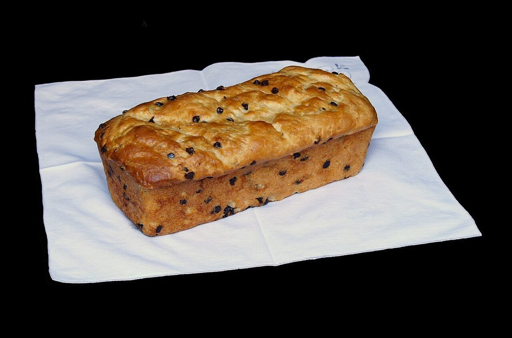

写真はパンのイメージです。お店のものではありません。
制作側の連想
サラダスピナーの部位を、配置図にしてみる
このサイトは、野菜の水気を切る道具「サラダスピナー」を図に見立てて作りました。六つの部位に番号をふり、上の図と並べています。制作側の連想で、お店の理念・由来とは無関係です。実際の製品の仕様や形を示すものでもありません。
凡例
六つの部位
- 1ふたボウルにかぶせる、透明または半透明の円い蓋。
- 2ボウル水をため、遠心力で飛ぶしずくを受け止める外側の器。
- 3バスケット小さな穴が並ぶ、葉ものを入れる内側のざる。
- 4ハンドルふたの上にあり、回す・押すなどして回転を与える部分。
- 5ブレーキボタン回転を止めるために押す、小さなボタン。
- 6すべり止めリング底に付けて、回しても器が動かないようにする輪。


パンとコーヒー豆のイメージ写真です。
ご案内
お店のこと(確認できたものだけ)
| 所在地 | 〒489-0868 愛知県瀬戸市今林町205 |
|---|---|
| 電話 | 準備中 |
| 営業時間 | 準備中 |
| 定休日 | 準備中 |
| ご予約 | 準備中 |
| 駐車場 | 準備中 |
| SNS | Instagram @montanabakery |


写真はいずれもイメージです。